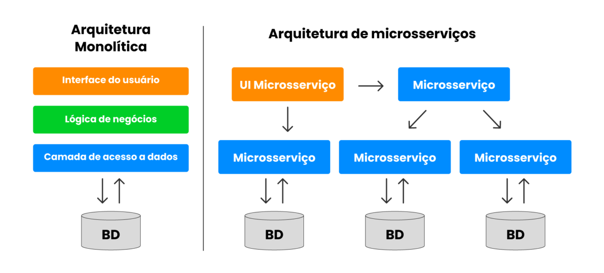

Backend Security:
O inicio, o principio e o começo
2026-06-20 09:00
Uma pergunta simples...
O que impede alguém de abrir o DevTools, alterar uma requisição e acessar dados que não deveria?
O frontend?
O navegador?
Ou o backend?
Quem é responsável pela segurança?
Infraestrutura?
Cloud?
Firewall?
Todos eles.
Mas o código continua sendo uma das maiores superfícies de ataque.
Vamos pensar juntos...
Se alguém descobrir a URL abaixo, o que aconteceria?
DELETE /usuarios/15
- Qualquer pessoa pode executar?
- Como o sistema sabe quem está fazendo a requisição?
- Como o sistema sabe se ela tem permissão?
O Backend é a Última Linha de Defesa
Tudo o que vem do cliente deve ser tratado como potencialmente malicioso.
- Formulários podem ser alterados
- JavaScript pode ser removido
- Requisições podem ser forjadas
- Tokens podem ser roubados
- Usuários podem tentar burlar regras
Segurança Não É Uma Feature
Segurança não é algo que adicionamos no final.
Ela influencia decisões de arquitetura, modelagem, autenticação, autorização e validação.
Um sistema pode funcionar perfeitamente e ainda assim ser inseguro.
O Que Vamos Construir Hoje?
- Autenticação
- Autorização
- Proteção de credenciais
- Validação de entrada
- Boas práticas para APIs
- Defesas contra erros comuns
Tudo isso aplicado em uma API real.
Agenda
- 1. Introdução à segurança web
- 2. Autenticação e Autorização
- 3. Validação e Saneamento de Dados
- 4. Segurança em APIs
- 5. Armazenamento seguro
- 6. Segurança no Frontend
- 7. Infraestrutura e DevOps
- 8. Simulações e análises
⚠️ EU não sou especialista
- Sou desenvolvedor curioso e preocupado com a segurança das aplicações que faço
O minimo:
- Fundamentos
- Senhas e criptografia
- XSS
- SQL Injection
- upload de arquivos
Arquiteturas da Web


Quais as principais tecnologias web?
Validar
do Latim, validare
Tornar Válido
Dar Validade
Onde precisamos validar?
Validações no frontend são usabilidade
Validações no backend são segurança
Validação não é Segurança!
E onde entra a segurança?


Segurança não é produto, é processo, ela fornece qualidade
Segurança e Velocidade de entrega são situações completamentes diferentes.
Enquanto velocidade é vísivel, segurança não...
até que ela falhe
Custo para corrigir uma falha de segurança

Retirado de relatório da IBM
Vale ressaltar os pilares

- Confidencialidade: apenas quem deve pode acessar
- Integridade: dados não podem ser alterados indevidamente
- Disponibilidade: sistemas devem estar acessíveis quando necessário
O que é Segurança da Informação?
- Conjunto de práticas para proteger dados e sistemas
- Garante Confidencialidade, Integridade e Disponibilidade (CID)
EXEMPLOS CONHECIDOS
Man in the Middle (MITM)
- O atacante intercepta a comunicação entre duas partes
- Pode capturar senhas, tokens ou dados sensíveis
- Muito comum em redes Wi-Fi públicas
Exemplo: Você acessa o banco em um Wi-Fi público
O invasor intercepta os dados antes que cheguem ao banco
Outros...
- Phishing
- Malware/Ransonware
- Engenharia Social
- PenDrive*
Mas Não vamos focar nisso
Credenciais e Autenticação
O Problema Mais Antigo da Computação
Como provar que um usuário é realmente quem ele diz ser?
- Login e senha
- Token
- Biometria
- Certificados digitais
- Múltiplos fatores
O Que Acontece Após o Login?
O usuário informa e-mail e senha.
Mas como o backend valida essas informações?
POST /login
{
"email": "joao@email.com",
"password": "123456"
}
O Jeito Errado
usuarios
id | nome | senha
-------------------
1 | João | 123456
2 | Ana | admin123
3 | José | senha123
Parece absurdo...
Mas sistemas assim ainda existem.
Imagine Que O Banco Vazou...
O invasor não precisa quebrar nada.
Ele já possui todas as senhas.
O prejuízo deixa de ser técnico e passa a ser jurídico.
Hash Não É Criptografia
Criptografia
Pode ser revertida com a chave correta.
Hash
Foi projetado para não ser revertido.
Por Que MD5 e SHA1 Não São Mais Recomendados?
md5("123456")
e10adc3949ba59abbe56e057f20f883e
O problema não é apenas o algoritmo.
O problema é a velocidade.
Um atacante consegue testar milhões de combinações por segundo.
Hash Para Senhas Deve Ser Lento
Quanto mais lento para gerar, mais caro fica atacar.
- bcrypt
- argon2
- scrypt
Exemplo em Laravel
Hash::make($senha);
A senha original nunca deve ser armazenada.
Hash::check($senha, $hash);
Depois Que O Usuário Faz Login...
Precisamos evitar que ele envie e-mail e senha em todas as requisições.
Então surge um novo problema:
Como lembrar quem está autenticado?
Existem Diversas Estratégias
- Sessões
- Cookies
- JWT
- OAuth
- OpenID Connect
A mais popular em APIs modernas é JWT.
Próxima Pergunta...
Se alguém roubar o token de um usuário, o sistema consegue perceber?
É aqui que começam os desafios reais da autenticação.
Como o Sistema Lembra Quem Você É?
O login acontece apenas uma vez.
Mas o usuário continua autenticado por horas, dias ou até semanas.
O Problema
O backend precisa reconhecer o usuário em todas essas requisições.
A Solução Mais Simples
Enviar e-mail e senha em toda requisição.
GET /profile
Authorization:
email=joao@email.com
password=123456
Péssima ideia.
Autenticação Baseada em Sessão
O Que Fica no Servidor?
sessao_abc123
{
"id": 15,
"nome": "João",
"perfil": "admin"
}
O navegador envia apenas o identificador da sessão.
Vantagens das Sessões
- Simples de entender
- Fácil invalidar acessos
- Muito utilizada em sistemas web tradicionais
- Controle total pelo servidor
Desvantagens das Sessões
- Estado armazenado no servidor
- Escalabilidade mais complexa
- Necessidade de compartilhamento entre múltiplas instâncias
- Problemas em arquiteturas distribuídas
Surge o JWT
JSON Web Token
Uma forma de transportar informações de autenticação.
Um JWT Parece Assim
eyJhbGciOi...
eyJpZCI6MTU...
QwErTyUiOp...
Header.Payload.Signature
Payload Decodificado
{
"id": 15,
"nome": "João",
"role": "admin"
}
Os dados ficam dentro do próprio token.
Uma Pergunta Importante
Se eu consigo ler o conteúdo do JWT...
Então ele está criptografado?
JWT Não É Criptografia
O Que Muita Gente Acha
- Token secreto
- Conteúdo escondido
- Impossível visualizar
O Que Realmente É
- Conteúdo legível
- Assinado digitalmente
- Protegido contra alterações
Então Para Que Serve a Assinatura?
Ela garante que ninguém alterou o conteúdo do token.
{
"id": 15,
"role": "admin"
}
Se alguém modificar os dados, a assinatura deixa de ser válida.
JWT em uma API
POST /login
↓
{
"token": "eyJhbGc..."
}
↓
Authorization: Bearer eyJhbGc...
Por Que APIs Gostam de JWT?
- Stateless
- Escala facilmente
- Compatível com microsserviços
- Muito utilizado em aplicações SPA
- Funciona bem com aplicativos móveis
O Maior Erro Sobre JWT
JWT ≠ Segurança
JWT é apenas um mecanismo de transporte de identidade.
Se o token for roubado, o atacante continua autenticado.
Discussão
O que acontece se alguém copiar o seu token JWT?
- O sistema consegue perceber?
- O token pode ser revogado?
- Como funciona logout?
- O que acontece quando o token expira?
Próximo Passo
Autenticar é uma coisa.
Autorizar é outra completamente diferente.
Autorização
Estar autenticado não significa ter permissão
Autenticação vs Autorização
Autenticação
Quem é você?
Identidade
Autorização
O que você pode fazer?
Permissões
Exemplo Real
João fez login com sucesso.
Logo ele está autenticado.
DELETE /usuarios/1
A pergunta agora é:
João pode executar essa ação?
O Erro Mais Comum
if(auth()->check()) {
excluirUsuario();
}
Estar logado não deveria ser suficiente.
Controle de Acesso
Toda ação sensível deve ser protegida.
- Criar usuários
- Editar usuários
- Excluir usuários
- Acessar relatórios
- Visualizar dados financeiros
Primeira Estratégia: Roles
ADMIN
Controle total
EDITOR
Gerencia conteúdo
USER
Operações básicas
Implementação Conceitual
if($usuario->role === 'admin') {
excluirUsuario();
}
Simples.
Mas começa a ficar complicado rapidamente.
O Problema Cresce
E se existirem dezenas de permissões?
- Criar post
- Editar post
- Excluir post
- Publicar post
- Gerenciar usuários
- Visualizar relatórios
Role-Based Access Control (RBAC)
Usuários recebem papéis.
Papéis recebem permissões.
Exemplo de RBAC
| Permissão | Admin | Editor | User |
|---|---|---|---|
| Criar Post | ✔ | ✔ | ✖ |
| Excluir Post | ✔ | ✔ | ✖ |
| Gerenciar Usuários | ✔ | ✖ | ✖ |
Outro Problema Muito Comum
IDOR
Insecure Direct Object Reference
GET /pedidos/100
E se eu trocar para:
GET /pedidos/101
Autorização Também É Sobre Dados
O usuário pode acessar este recurso?
$pedido->usuario_id
==
auth()->id()
Nem toda autorização depende apenas de roles.
Pergunta Para a Turma
Em um marketplace, o vendedor pode editar qualquer produto?
Ou apenas os produtos dele?
Defesa em Camadas
Login
Token
Role
Permissão
Validação do Recurso
Conclusão
Autenticação responde:
Quem é você?
Autorização responde:
O que você pode fazer?
Mas Ainda Falta Algo...
E se o usuário enviar dados inválidos?
Ou tentar manipular parâmetros?
Vamos falar sobre validação e proteção de APIs.
Protegendo APIs
Nunca confie nos dados recebidos
Uma Regra Simples
Mesmo quando foi enviado pelo seu próprio frontend.
O Que o Usuário Pode Fazer?
Alterar requisições.
Remover validações.
Trocar parâmetros.
Enviar qualquer valor.
Exemplo
{
"nome": "",
"idade": -500,
"salario": 999999999
}
O navegador permitiu.
O backend deveria aceitar?
Validação é Obrigatória
$request->validate([
'nome' => 'required|min:3',
'email' => 'required|email',
'idade' => 'integer|min:0'
]);
Segurança e qualidade caminham juntas.
Validação Não É Apenas Segurança
Segurança
Evita abusos
Consistência
Dados corretos
Experiência
Menos erros
SQL Injection
O Ataque Mais Famoso
' OR 1=1 --
Décadas depois, continua aparecendo em sistemas reais.
Código Vulnerável
$email = $_POST['email'];
$sql = "
SELECT *
FROM usuarios
WHERE email = '$email'
";
O Que o Banco Recebe?
SELECT *
FROM usuarios
WHERE email = ''
OR 1=1 --'
Resultado:
Todos os registros.
Como Evitar?
Queries Parametrizadas
User::where(
'email',
$email
)->first();
Pergunta Para a Turma
ORM elimina SQL Injection?
Nem sempre.
Depende de como ele é utilizado.
Mass Assignment
Um Problema Muito Comum
{
"nome": "João",
"email": "joao@email.com",
"is_admin": true
}
O frontend enviou um campo inesperado.
Código Ingênuo
User::create(
$request->all()
);
Parece elegante.
Pode ser extremamente perigoso.
Princípio Importante
Rate Limiting
E Se Alguém Tentar 10 Senhas?
Fácil bloquear.
E 1.000?
E 100.000?
Brute Force
Tentativas Automatizadas
Milhares de requisições por minuto.
Defesa
60 requisições/minuto
Depois disso:
HTTP 429
Too Many Requests
Exposição de Dados
Nem Todo Dado Deve Voltar
{
"id": 1,
"nome": "João",
"email": "joao@email.com",
"senha": "$2y$10..."
}
A senha está protegida.
Mas não deveria estar na resposta.
O Mesmo Vale Para...
- Tokens
- Chaves de API
- Dados financeiros
- Informações internas
- Logs sensíveis
Mensagens de Erro
SQLSTATE[23000]:
Integrity constraint violation...
Excelente para desenvolvedores.
Excelente também para atacantes.
O Que o Cliente Deveria Ver?
{
"message":
"Operação não realizada"
}
O detalhe técnico fica nos logs.
Checklist de Segurança Para APIs
- Validar entradas
- Usar autenticação
- Controlar permissões
- Evitar SQL Injection
- Limitar requisições
- Ocultar informações sensíveis
- Monitorar logs
Uma Última Pergunta...
Mesmo fazendo tudo isso, ainda podemos cometer erros?
Sim.
É por isso que existem boas práticas, revisões e testes.
OWASP
OWASP Top 10
As 10 principais vulnerabilidades de segurança em aplicações web
Vulnerabilidade
do Latim, vulnerabilis
aquele que pode serferido
Suscetivel a Ferimentos
1. Quebra de Controle de Acesso
- Acesso a recursos sem a devida permissão
- Exposição ou modificação de dados indevidamente
//php
if (!$user->canAccess('admin_area')) {
abort(403);
}
//js
if (!user.permissions.includes('admin_area')) {
alert('Acesso negado');
window.location = '/';
}
1. Quebra de Controle de Acesso
- Valide permissões no backend
- Nunca confie apenas no frontend
2. Falhas Críticas de Criptografia
- Uso de algoritmos ou protocolos inseguros
- Dados sensíveis expostos ou mal protegidos
_ _ _
0-9
10 * 10 * 10 = 1.000 possibilidades

$nome = $_POST['nome'];
$email = $_POST['email'];
$senha = $_POST['senha'];
$sql = "
INSERT INTO tb_users (nome, email, senha)
VALUES ('{$nome}', '{$email}', '{$senha}');
";
$nome = $_POST['nome'];
$email = $_POST['email'];
$senha = password_hash(
$_POST['senha'],
PASSWORD_DEFAULT
);
$sql = "
INSERT INTO tb_users (nome, email, senha)
VALUES ('{$nome}', '{$email}', '{$senha}');
";
//login
$email = $_POST['email'];
$senha = $_POST['senha'];
$sql = "SELECT * FROM tb_users WHERE email='{$email}';";
if (password_hash($senha, $senhaQueTaNoBanco)) {
// pode entrar...
}
2. Falhas Críticas de Criptografia
- Use algoritmos modernos e seguros
- Nunca armazene senhas em texto puro
//javascripto
const bcrypt = require("bcrypt");
const hash = bcrypt.hash('123456');
if (bcyrpt.compare('123456', hash)) {}
3. SQL INJECTION
- Injeção de SQL ou NoSQL
- Possibilidade de execução de comandos maliciosos
$email = $_POST['email'];
$senha = $_POST['senha'];
$sql = "
SELECT * FROM tb_users WHERE email='{$email}' LIMIT 1
";
$email = $_POST['email']; // ' OR 1=1; --
$senha = $_POST['senha'];
$sql = "
SELECT * FROM tb_users WHERE email='{$email}' LIMIT 1
";
$email = $_POST['email']; // ' OR 1=1; --
$senha = $_POST['senha'];
$sql = "
SELECT * FROM tb_users WHERE email='' OR 1=1 -- LIMIT 1'
";
//solução
$email = $_POST['email'];
$senha = $_POST['senha'];
$pdo->prepare(
"SELECT * FROM tb_users WHERE email=:email"
);
$pdo->bindParams([
':email' => $email,
]);
3. SQL INJECTION
- Sempre use prepared statements no backend
- Escape dados exibidos no frontend
4. "Design" Inseguro
- Ausência de segurança já na fase de projeto
- Arquitetura ou fluxos vulneráveis por concepção
4. Design Inseguro
- Inclua segurança no processo de projeto
- Pense em cenários de ataque desde o início
5. Problemas de Configuração de Segurança
- Configurações padrão inseguras
- Serviços desnecessários expostos
5. Problemas de Configuração de Segurança
- Desative serviços e portas não usados
- Revise as configurações de produção
// Exemplo de .env seguro
APP_DEBUG=false
APP_ENV=production
6. Componentes Vulneráveis e Desatualizados
- Uso de bibliotecas e pacotes com falhas conhecidas
- Falta de atualização ou monitoramento de dependências
6. Componentes Vulneráveis e Desatualizados
- Mantenha dependências sempre atualizadas
- Use ferramentas como Composer Audit e NPM Audit
7. Falhas de Identificação e Autenticação
- Gestão inadequada de credenciais
- Quebra na autenticação ou sessões
7. Falhas de Identificação e Autenticação
- Use autenticação forte e tokens seguros
- Implemente timeouts de sessão
session_set_cookie_params(['httponly' => true, 'secure' => true]);
session_start();
// Exemplo simples de timeout de sessão no frontend
setTimeout(() => {
alert('Sessão expirada');
window.location = '/login';
}, 1800000); // 30 minutos
8. Falhas de Integridade de Software e Dados
- Atualizações ou pacotes comprometidos
- Manipulação maliciosa de dados ou software
8. Falhas de Integridade de Software e Dados
- Verifique integridade de pacotes e uploads
- Use assinaturas digitais se possível
9. Falhas de Monitoramento e Logging
- Ausência de logs de segurança
- Falhas não detectadas a tempo
9. Falhas de Monitoramento e Logging
- Implemente logs de segurança no backend
- Monitore eventos suspeitos
Log::warning('Tentativa de acesso não autorizado', ['user' => $user->id]);
10. SSRF - Server Side Request Forgery
- Servidor faz requisições manipuladas externamente
- Pode acessar redes internas ou serviços privados
10. SSRF - Server Side Request Forgery
- Valide e limite URLs recebidas pelo servidor
- Evite requisições diretas a redes internas
if (!filter_var($url, FILTER_VALIDATE_URL) || !str_starts_with($url, 'https://')) {
throw new Exception('URL inválida');
}
Conclusão
Segurança deve estar presente em todas as fases do desenvolvimento!
Mas por que
DÚVIDAS?